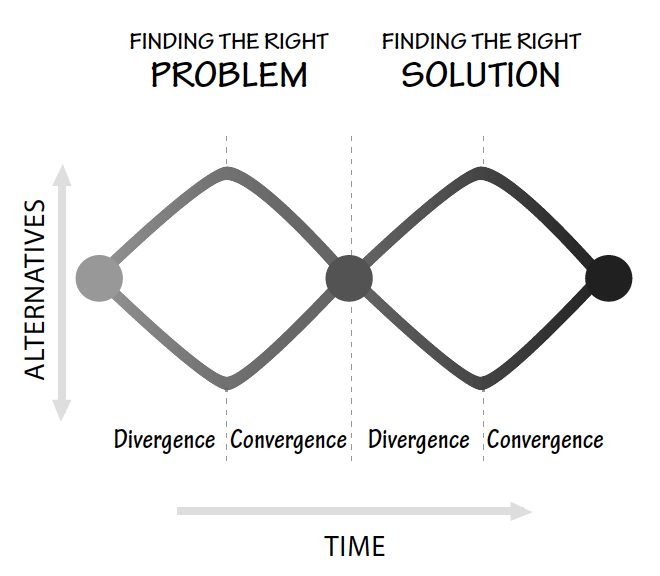

In specific, the stages of design would be observing, generating, prototyping and testing. In my working experience, I have learned the importance of prototyping and creating mock-ups. A client’s imagination of the design in mind may be considerably different as the developer’s. The mock-up would stand as the most cost and time effective way in presenting the thoughts. For instance, when designing a website, I would use tools like photoshop or sketch to create a basic view of the site. For example when I was redesigning the website for Center for Microbiome Innovation (as shown below). I wanted to create a navigation bar that looks like microbes (left figure). During that time, I believed my design was very creative and was confident that the client would like it. As I was about to start building the site, the client told me he prefers the traditional navigation bar design. I was disappointed yet glad that it was just a prototype. I end up creating another mock-up (right figure). The experience had taught me the importance of building prototypes in the designing process. My perspective may vary with the client. Without the prototype, I would have to rebuild the website.